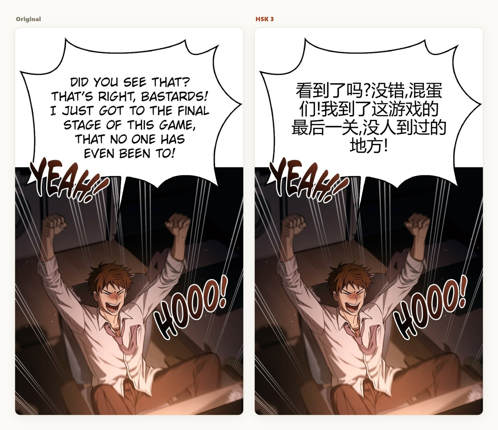
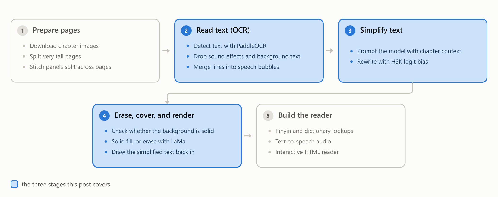
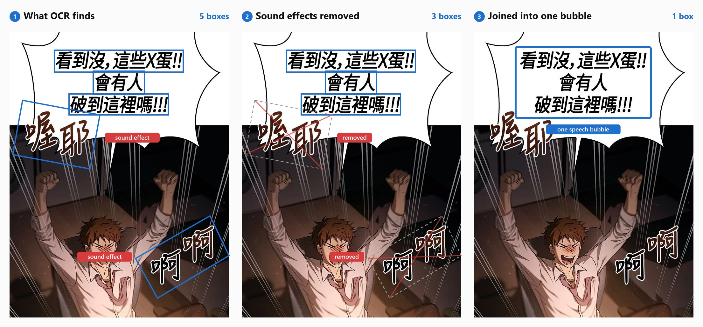
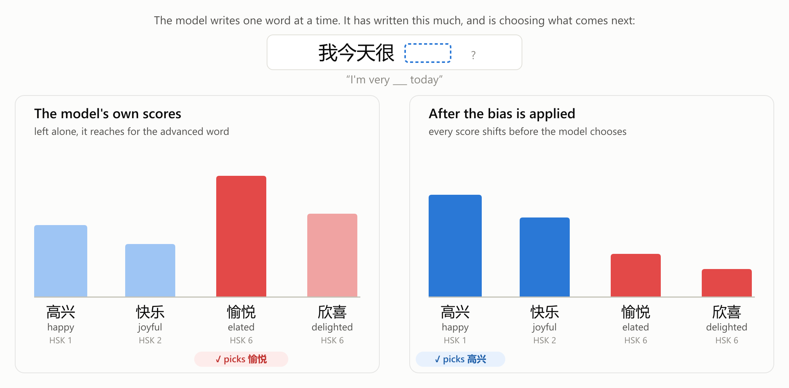
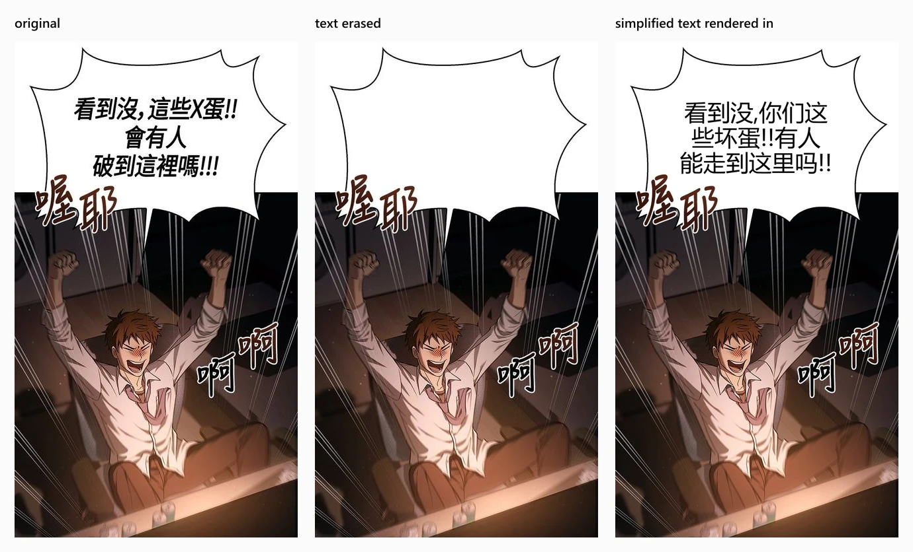
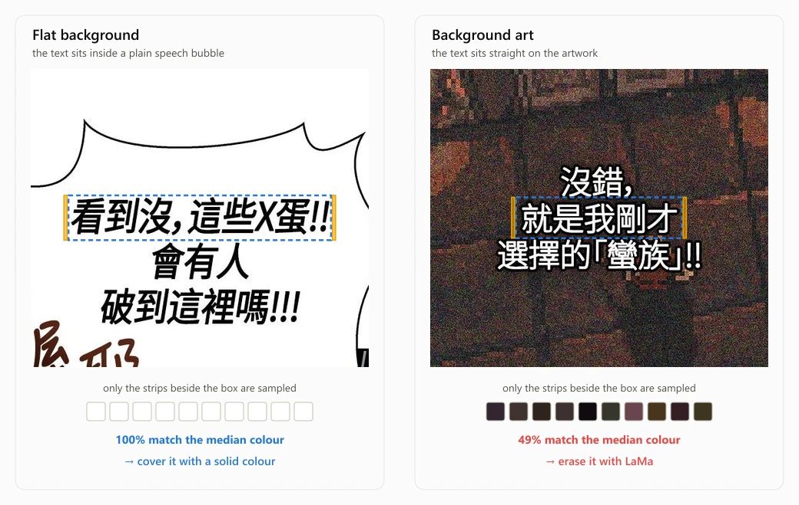
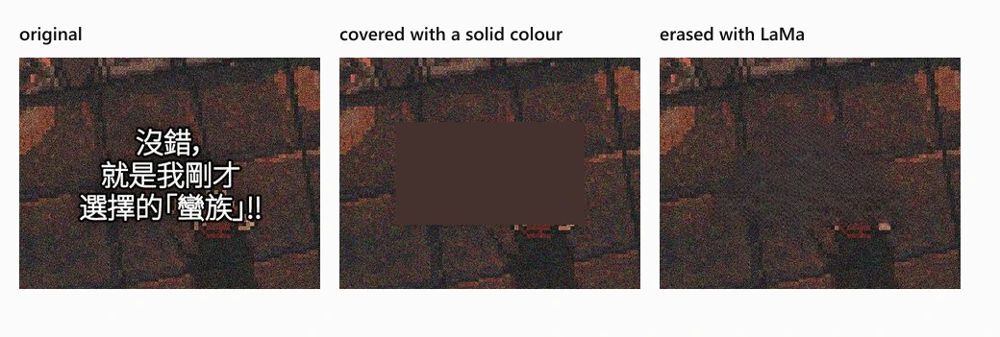

HSK Manga: Turning Manga into Beginner-Level Chinese
My brother has been learning Chinese for years. He reads a lot of English-translated manhua, but when he tried reading the Chinese original, he grew frustrated. He still couldn't parse many sentences and found himself spending more time looking up definitions than actually reading the text! Turns out this is a fairly normal experience. Research shows that you need to know about 95% of the words to follow text with assistance and 98% to read it comfortably (Hu & Nation, 2000).
One solution for this is graded readers, hand-written text designed to target specific HSK levels (HSK is the standard 1–9 scale of Chinese proficiency). But writing them by hand doesn't scale, and engaging graded text is hard to come by. That's why I built HSK Manga, which is free for anyone to use. It takes manga that already exists online and rewrites the dialogue just how a graded reader would. You pick an HSK level from 1 to 4, and every line in the chapter gets rewritten to that level.

I've been building HSK Manga for the past 6 months, as a junior in high school. In this post, I'll go over the three most important stages in its pipeline.

Extracting text
Before I can simplify anything, I need the dialogue as actual text. Manga pages have text embedded into the images, so I'm forced to use optical character recognition (OCR), which is software that reads text out of an image. The one I use is PaddleOCR, and getting it to work on manga pages requires implementation beyond the base software.
OCR issues
If you run OCR on a manga page, it collects every single piece of text it can find, useful or not. Useless text is either background text or heavily stylized SFX (the sound-effect lettering drawn into the art). Capturing this text is bad because nobody reads it in the first place, and hand-drawn characters are really hard to render in a way that will match the art. I solved this by building a list of filters that use information from PaddleOCR (bounding-box dimensions, chroma, rotation, and confidence level) to drop text that shows clear signs of being unnecessary, highly stylized, or both. Getting these filters right took hundreds of sample chapters because of how hard it can be to differentiate between real dialogue and useless text.
Another issue with OCR is that it extracts text line by line, so a single speech bubble comes back as several fragments. This is bad because manga dialogue is split into speech bubbles, not lines. The solution is similar to how I filter out unnecessary text: I built a function that joins bounding boxes back together when certain requirements are met (roughly, when boxes are close and aligned enough to be the same bubble).

All of this lets me extract the exact pieces of text I want to simplify.
Simplification
When I started this project, I assumed getting the AI to simplify text would be really easy. All I had to do was write a great prompt, and the AI would do the rest. Through lots of testing, prompt changes, and some research into how others handled the same problem, I concluded that prompt engineering hits a ceiling on simplification quality. AI models are great at retaining meaning and grammar during simplification, but they lack a firm grasp of the different HSK levels, and they don't simplify text enough.
To solve this, I tried creating a restriction where the model could only write words I allowed, using a grammar format called GBNF. In my case, that meant only low-level HSK words. But it was too strong of a constraint since there are many cases where a word does not have a simpler alternative. A common example of this would be a person's name. This is why I moved to a softer inference-time setting called logit bias. Tokens are the sub-word chunks a model actually generates, and logit bias lets you nudge the model's probability for specific tokens up or down. That let me make simpler words more likely and harder words less likely, without banning anything outright.

So how did I actually use logit bias? Two details matter here: the token bias map and the AI provider. To build the map, I scanned all the tokens in the model's tokenizer vocabulary and sorted them into two groups: tokens whose characters all fall inside the target HSK level, and tokens that form words/phrases above that level. That second group matters because many advanced words are combinations of beginner characters. For the provider, I used Fireworks AI running DeepSeek V4 Flash, the only place where there was no practical cap on a bias map this big (~22,000 tokens).
Once those two things were settled, I had to figure out how much bias to apply. After testing out many different values, I ended up with a ±2.5 bias value: a positive +2.5 on the in-level tokens to make them roughly 12 times more likely to get picked, and a negative −2.5 on the above-level tokens to make them less likely. I found that below 2.5, not enough words got simplified. Above it, the model started reaching for clumsy substitutions, turning 敏捷 ("agile") into 快 ("fast") and 沉浸 ("immersed") into 喜欢 ("like") in places where the harder word was the right one.
Now that the dialogue is simplified enough to read, it needs to be placed onto the images.
Erasing, covering, and rendering new text
For the output chapter to actually look nice, the original text needs to be either covered or erased.

To do this, I use the bounding boxes from my OCR to select the areas where I'll either erase the text or cover it. Text is erased with LaMa when the background isn't a solid color, and it's covered when the background is solid. LaMa is an AI inpainting model that fills an erased region with plausible background art, similar to Photoshop's content-aware fill.
Determining whether the background is solid is as simple as sampling a small set of pixels and checking what fraction of them match the median color.

On a solid background, covering and LaMa create the same visual result, but covering the text is much more efficient. For text placed on top of artwork, LaMa looks far better, since it can predict what the background should be.

Once the original text is either covered or erased, new text needs to be generated. This step is as simple as taking the bounding box from the OCR and using it like a text box for the simplified text.
Where it stands
As of today, HSK Manga has simplified over 500 chapters. In this blog post I only mentioned the general functionality of the pipeline, but there are many other features available such as pinyin, definitions, and audio. My project still isn't finished though. Comments, emails, or the form at hskmanga.com/feedback are highly appreciated. I read everything! I'm always looking to improve HSK Manga, whether that's simplification quality, more features, or a better interface.